Exploring patterns of observation frequency of Rufous Hummingbirds along the Pacific Coast.
May 2, 2018
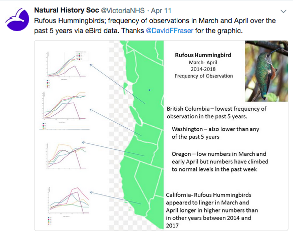
When I saw the above analysis by my friend Dave Fraser, I thought 💭:
and then I thought …
And it turns out you can.
You can get up-to-date eBird data via the eBird website’s View & Explore options, but I was hoping to include more historical data and didn’t want to click that often. The full eBird data set is available for download, but it is updated quarterly—so will not have the very recent observation records we are after. Sigh 😞.
Then I talked to Andy Teucher about my eBird data woes. He introduced me to the rOpenSci R package 📦 rebird—he is one of the package coauthors! 👍
The rebird package 📦 provides an interface with the eBird webservices—which in regular english means it goes and gets the eBird data from the web. It also returns the data in a tidy format, meaning the data are ready to work with the popular tidyverse R packages 📦 that many of us new to R have used to ease our way into coding.
OK, so let’s start by pulling A LOT of eBird data—50 years seems like a lot?
#load R packages we will need for getting the data
library(rebird) #get eBird data from the web using ebirdfreq()
library(dplyr) #data munging
library(purrr) #map() for looping
#thanks Andy for the purrr help!
#function to get eBird data for many states/provinces using rebird R package
map_state <- function(state) {
map_dfr(1968:2018, ~ {
ebirdfreq("states", state, .x, .x, 1, 5) %>%
filter(comName == "Rufous Hummingbird") %>%
mutate(year = .x, state = state)
})
}
#get eBird data for west coast state/provinces
ruhu_raw <- map_dfr(c("CA-BC","US-CA","US-WA", "US-OR"), ~ {
map_state(.x)
})
head(ruhu_raw)## # A tibble: 6 x 6
## comName monthQt frequency sampleSize year state
## <chr> <chr> <dbl> <dbl> <int> <chr>
## 1 Rufous Hummingbird January-1 0. 14. 1968 CA-BC
## 2 Rufous Hummingbird January-2 0. 9. 1968 CA-BC
## 3 Rufous Hummingbird January-3 0. 11. 1968 CA-BC
## 4 Rufous Hummingbird January-4 0. 14. 1968 CA-BC
## 5 Rufous Hummingbird February-1 0. 15. 1968 CA-BC
## 6 Rufous Hummingbird February-2 0. 14. 1968 CA-BCThe eBird data provided by rebird is indeed very tidy. 🎁 Let’s take a moment to cheers the authors of and contributers to this open source R package. 🎉
There is still a bit of data cleaning or wrangling to do—there alway is and it would be less fun if there wasn’t 😉. We need to do something with the monthQt variable. This is our time variable, which we need for plotting. Right now it is coded as a character variable and it needs to be recognized as a date. And you might notice some zeros in the 2018 weeks that we have not yet lived—or birded. Let’s filter out those zeros, they should really have been NAs?
#we need a few more packages
library(stringr) #clean up variables
library(lubridate) #make date data dates
library(tidyr) #separate month and quarter
ruhu_clean <- ruhu_raw %>%
separate(monthQt, c("month", "week"), sep = "-") %>%
mutate(day = case_when(
week == 1 ~ 1,
week == 2 ~ 8,
week == 3 ~ 15,
week == 4 ~ 23
)) %>%
mutate(date = ymd(paste0(year, "-",month,"-",day))) %>%
mutate(week = lubridate::week(date)) %>%
filter(sampleSize != 0) #filter out any zero that is actually an NA
head(ruhu_clean)## # A tibble: 6 x 9
## comName month week frequency sampleSize year state day date
## <chr> <chr> <dbl> <dbl> <dbl> <int> <chr> <dbl> <date>
## 1 Rufous Hu… Janu… 1. 0. 14. 1968 CA-BC 1. 1968-01-01
## 2 Rufous Hu… Janu… 2. 0. 9. 1968 CA-BC 8. 1968-01-08
## 3 Rufous Hu… Janu… 3. 0. 11. 1968 CA-BC 15. 1968-01-15
## 4 Rufous Hu… Janu… 4. 0. 14. 1968 CA-BC 23. 1968-01-23
## 5 Rufous Hu… Febr… 5. 0. 15. 1968 CA-BC 1. 1968-02-01
## 6 Rufous Hu… Febr… 6. 0. 14. 1968 CA-BC 8. 1968-02-08That looks 👀 better!
Now let’s have a quick, exploratory look 👀 at what data we have, starting just with British Columbia.
#we need another package
library(ggplot2) #plotting
ruhu_clean %>%
filter(state == "CA-BC") %>% #just B.C.
ggplot(aes(x = week, y = frequency, group = year)) +
geom_line(colour = "grey") +
theme_minimal()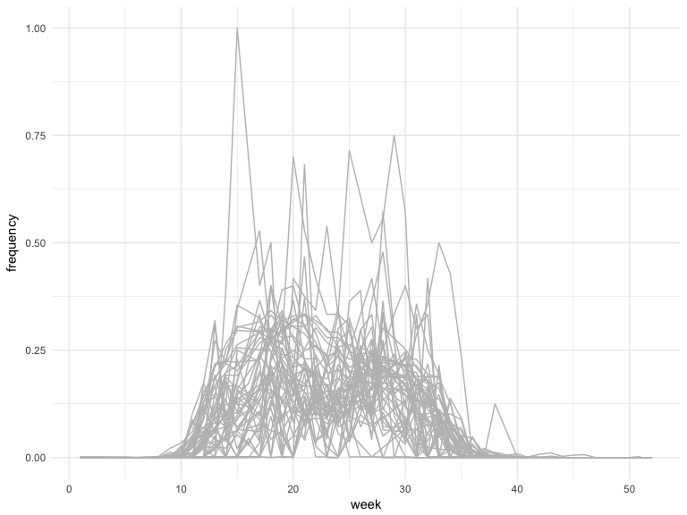
There seems to be a lot of very high frequency values in the data set (frequency = 1.0), which is a bit puzzling—all the birds observed were Rufous Hummingbirds ❓. Let’s colour the lines for each year—using a continuous colour scale—to see if we learn something.
ruhu_clean %>%
filter(state == "CA-BC") %>% #just B.C.
ggplot(aes(x = week, y = frequency, group = year)) +
geom_line(aes(colour = year)) +
theme_minimal()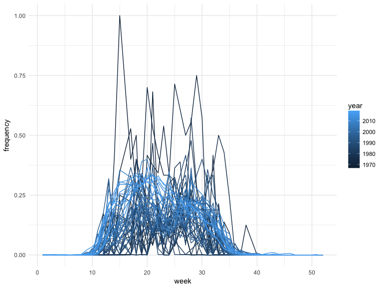
Hmmmmm…this shows that most of that puzzling data is pre-2000s. eBird launched in 2002, with birders able to enter observations instantly via smartphones. Andy—a birder and contributor to eBird—mentioned that maybe the older records are being entered by birders going through past checklists & field notebooks. Filtering out the pre-2002 data seems like a reasonable approach?
ruhu_since_2002 <- ruhu_clean %>%
filter(year > 2001)
ruhu_since_2002 %>%
filter(state == "CA-BC") %>% #just B.C.
ggplot(aes(x = week, y = frequency, group = year)) +
geom_line(aes(colour = year)) +
theme_minimal()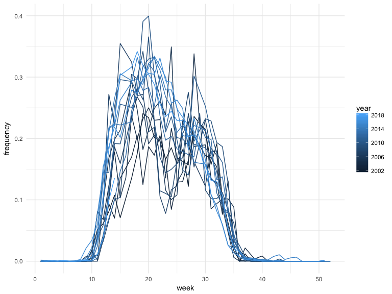
Looks 👀 better!
Let’s use some colour to distinguish the 2018 data from the 2002-2017 observation frequencies.
#make a small df with just 2018 data
df_bc_2018 <- ruhu_since_2002 %>%
filter(state == "CA-BC", year == 2018)
ruhu_since_2002 %>%
filter(state == "CA-BC") %>%
ggplot(aes(x = week, y = frequency, group = year)) +
geom_line(aes(colour = "grey"), alpha = .5) +
geom_line(data = df_bc_2018, aes(colour = "red")) +
scale_colour_manual(name=NULL,
labels=c("2002-2017", "2018"),
values=c("grey", "red")) +
theme_minimal()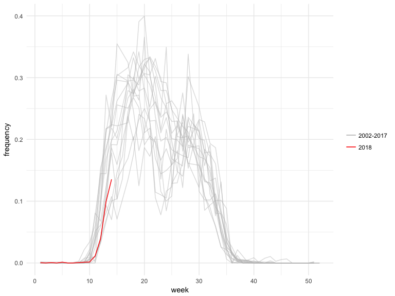
This plot confirms the original analysis with the first 2018 Rufous Hummingbird observations later than most years since 2002. However, the rate of increase in observation frequency seems to be similar.
Let’s look at all the Pacific Coast data now?
#make a small df with just 2018 data
df_2018 <- ruhu_since_2002 %>%
filter(year == 2018)
ruhu_since_2002 %>%
ggplot(aes(x = week, y = frequency, group = year)) +
geom_line(aes(colour = "grey"), alpha = .5) +
geom_line(data = df_2018, aes(colour = "red")) +
facet_wrap(~ state, ncol=1) +
scale_colour_manual(name=NULL,
labels=c("2002-2017", "2018"),
values=c("grey", "red")) +
theme_minimal()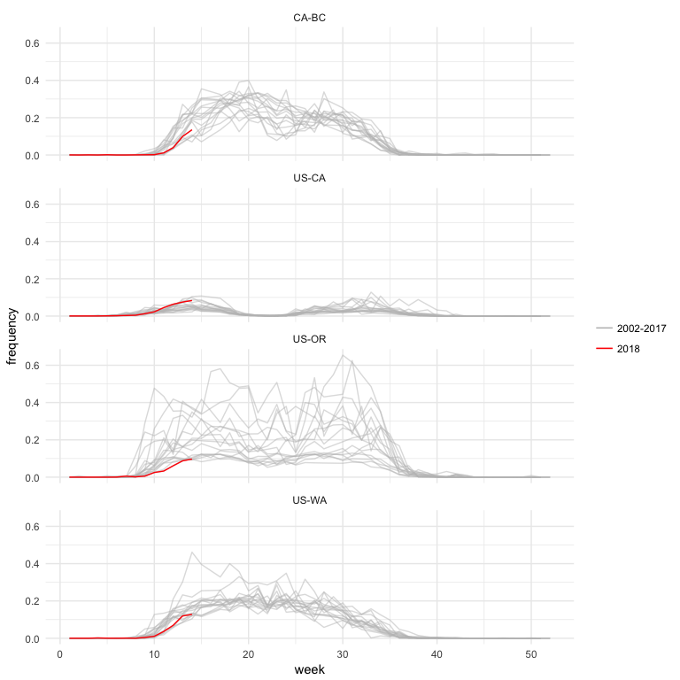
Interesting! But wait, while I’d like California to be a bit closer to British Columbia, I think I want the order of my facet plots to mirror the order along the Pacific Coast. Let’s make sure the variable state is a factor and in the order we want for plotting.
#we need another package
library(forcats) #for wrangling factors
#order for facet plotting
wc_order <- c("CA-BC","US-WA","US-OR","US-CA")
#make state a factor and order for facet plotting
ruhu_since_2002 <- ruhu_since_2002 %>%
mutate(state = factor(state, levels = wc_order))
#make a small df with just 2018 data
df_2018 <- ruhu_since_2002 %>%
filter(year == 2018)
ruhu_since_2002 %>%
ggplot(aes(x = week, y = frequency, group = year)) +
geom_line(aes(colour = "grey"), alpha = .5) +
geom_line(data = df_2018, aes(colour = "red")) +
facet_wrap(~ state, ncol=1) +
scale_colour_manual(name=NULL,
labels=c("2002-2017", "2018"),
values=c("grey", "red")) +
theme_minimal()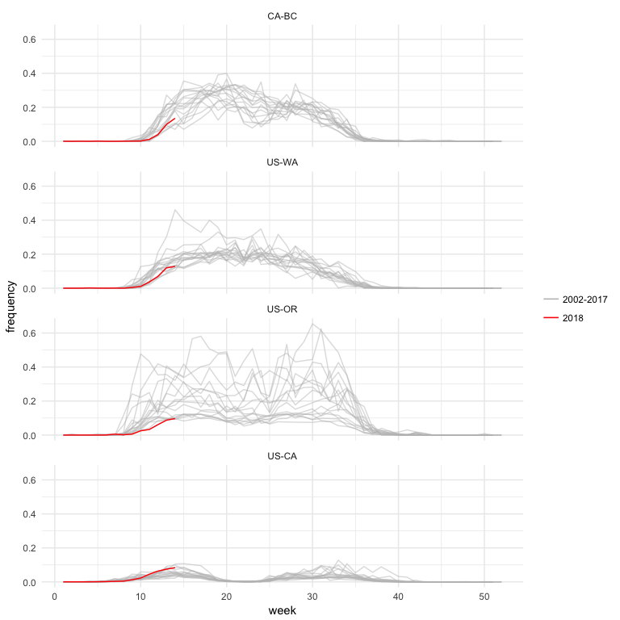
Looks 👀 better!
And again, the plot confirms the original analysis—first observations are later and frequencies are lower for Rufous Hummingbirds, especially in Oregon, Washington and British Columbia.
Let’s finish up with some window dressing for our plots, adding the usual suspects like a title and data attribution, and adding a nice silhouette of a hummingbird using the rphylopic R package 📦. Andy even suggested using the rufous colour—💯.
So final plot for British Columbia:
#we need a couple more packages
library(rphylopic) #for image, package from GitHub
library(curl) #required by rphylopic function
## add image
hummer <- image_data("679605a3-95f1-4f57-be33-568640aca7b9", size = "512")[[1]]
#make a small df with just 2018 data
df_bc_2018 <- ruhu_since_2002 %>%
filter(state == "CA-BC", year == 2018)
ruhu_since_2002 %>%
filter(state == "CA-BC") %>%
ggplot(aes(x = week, y = frequency, group = year)) +
geom_line(aes(colour = "grey"), alpha = .5) +
geom_line(data = df_bc_2018, aes(colour = "orange3")) +
scale_colour_manual(name=NULL,
labels=c("2002-2017", "2018"),
values=c("grey", "orange3")) +
labs(title = "Frequency of Rufous Hummingbird Observations\nin British Columbia (2002-2018)",
caption = "Data from eBird") +
theme_minimal() +
theme(legend.position = c(0.15, 0.3)) +
add_phylopic(hummer, alpha = .7, color = "orange3", ysize = 7, x = 45, y = .3)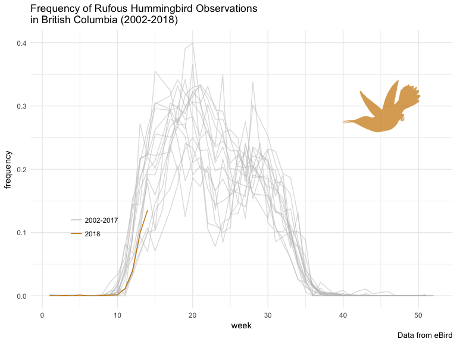
and final plot for the Pacific Coast:
#order for facet plotting
wc_order <- c("CA-BC","US-WA","US-OR","US-CA")
#make state a factor and order for facet plotting
ruhu_since_2002 <- ruhu_since_2002 %>%
mutate(state = factor(state, levels = wc_order))
#make a small df with just 2018 data
df_2018 <- ruhu_since_2002 %>%
filter(year == 2018)
ruhu_since_2002 %>%
ggplot(aes(x = week, y = frequency, group = year)) +
geom_line(aes(colour = "grey"), alpha = .5) +
geom_line(data = df_2018, aes(colour = "orange3")) +
facet_wrap(~ state, ncol=1) +
scale_colour_manual(name=NULL,
labels=c("2002-2017", "2018"),
values=c("grey", "orange3")) +
labs(title = "Frequency of Rufous Hummingbird Observations\nAlong the Pacific Coast (2002-2018)",
caption = "Data from eBird") +
theme_minimal() +
theme(legend.position = "bottom") +
add_phylopic(hummer, alpha = .7, color = "orange3", ysize = 3, x = 45, y = .3)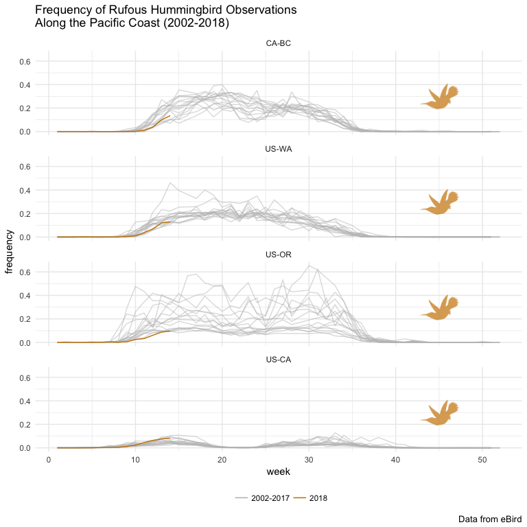
OK, I know. The silhouette is not a Rufous Hummingbird. It is a Topazza pella—the Crimson Topaz—the only hummingbird image in the phylopic library. At least it is a hummingbird?
For more on Rufous Hummingbirds (Selasphorus rufus), you can read the species account in the The Birds of North America series.
For keeping up with cool nature stuff in Victoria, British Columbia, you can follow the Victoria Natural History Society twitter feed.
If you see 👀 a Rufous Hummingbird, you can add your observation to eBird.
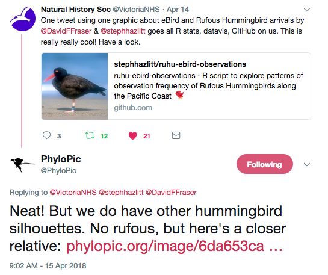
If you want to wrangle the full eBird data set, you might want to check out the R package 📦 AUK, also recently onboarded at rOpenSci.
And thanks to the above tweet from phylopic, we have a final, final set of plots with an improved hummingbird image 😄.
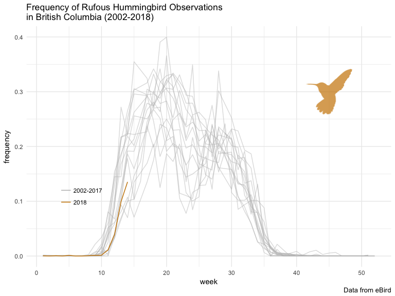
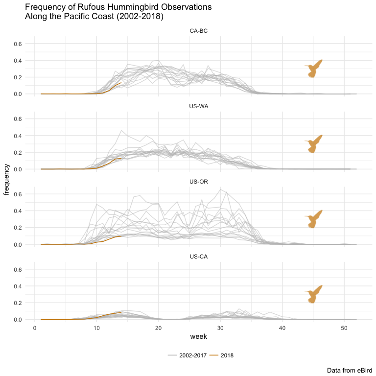
This exploration was a collaboration with Andy Teucher—Andy told me about rebird 📦, provided help with loops using the purrr 📦, along with many other gReat suggestions. This post was originally published through GitHub.
If you see mistakes or want to suggest changes, please create an issue on the source repository.
Text and figures are licensed under Creative Commons Attribution CC BY-SA 4.0. Source code is available at https://github.com/stephhazlitt/stephhazlitt-distill, unless otherwise noted. The figures that have been reused from other sources don't fall under this license and can be recognized by a note in their caption: "Figure from ...".